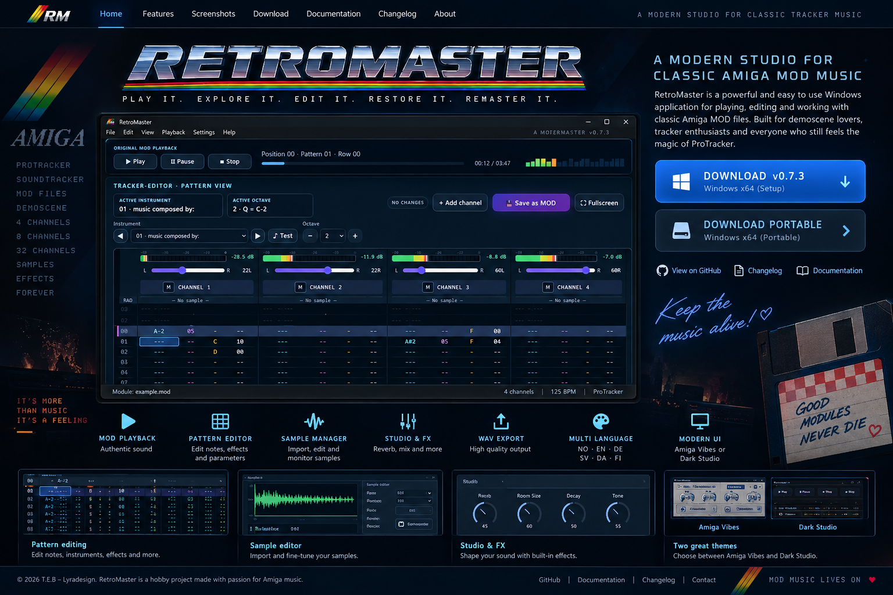

AMIGA
PROTRACKER
SOUNDTRACKER
MOD FILES
TRACKER MUSIC
DEMOSCENE
SAMPLES
EFFECTS
NORDBITS / PROJECT 001
RETROMASTER
PLAY IT. EXPLORE IT. EDIT IT. RESTORE IT. REMASTER IT.

AMIGA MOD FILES
The patterns stay visible.
RetroMaster gives classic MOD music a comfortable modern Windows workspace without hiding the patterns, samples and channel structure that make tracker music what it is.
Inspect tracker data directly, work with the classic 31-slot instrument bank, edit notes and effects, shape the mix and render the result to WAV.
Pattern editing
Edit notes, instruments, effects and parameters directly in the tracker pattern.
Sample tools
Inspect samples and import audio into the module while keeping the classic instrument workflow visible.
Studio & export
Work with reverb, mix and tone, then render the result as high-quality WAV audio.
AMIGA TRACKER MUSIC
MOD files are more than audio files.
Classic tracker modules contain the musical building blocks themselves: patterns, notes, instruments, samples, effects and channel data. RetroMaster keeps that structure visible instead of reducing the module to a simple audio waveform.
Made for classic tracker culture
RetroMaster is built around the workflow and terminology familiar to Amiga MOD and tracker enthusiasts, while presenting the tools in a modern Windows interface.
See how the music is built
Inspect and edit notes, instruments, effects and parameters directly in the pattern data instead of treating the module as a black box.
Work with the original ingredients
Explore the module's samples and instrument slots, shape the playback with studio tools and export the result to WAV when you want a modern rendered copy.
RetroMaster FAQ
What is RetroMaster?
RetroMaster is a Windows application for playing, inspecting, editing and working with classic Amiga MOD tracker music.
Who is RetroMaster for?
It is aimed at tracker enthusiasts, Amiga and demoscene fans, module collectors and anyone who wants to explore how classic MOD music is structured.
Can RetroMaster export audio?
Yes. RetroMaster includes WAV export so a module can be rendered to a conventional audio file after playback or editing.
DOWNLOAD
Give old modules
Give old modules
a new workspace.
RetroMaster is available for Windows x64 as an installer or portable build.
Windows SetupRetroMaster-Setup-0.7.3-x64.exeDOWNLOAD ↓
Portable buildRetroMaster-Portable-0.7.3-x64.exeDOWNLOAD ↓
Current hobby builds are not digitally signed, so Windows SmartScreen may display “Unknown publisher”.